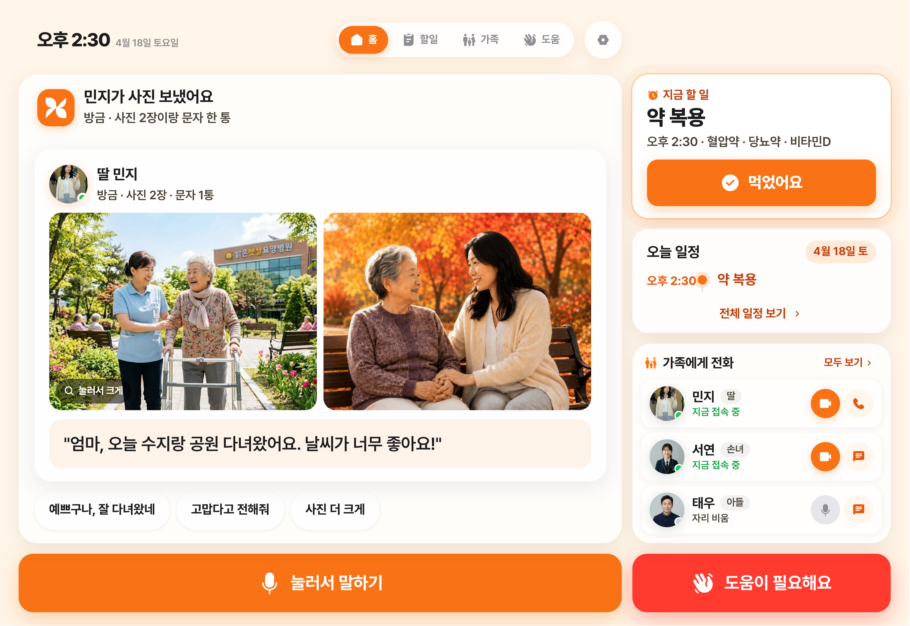

하루안부 · 붙임 1
실제 구현 화면 — 같은 하루, 네 사람의 화면
요양보호사가 한 번 남긴 기록이 가족에게는 안부로, 의료진에게는 확인할 변화로, 어르신에게는 큰 글씨 한 화면으로 도착합니다. 네 화면 모두 같은 시설, 같은 입소자 네 명(박영자 · 최명자 · 김순자 · 이정숙)의 하루입니다.
화면 위 번호와 오른쪽 설명 번호가 같습니다.
 1234
123401요양보호사 앱
케어 기록
할 일 순서대로 기록하고, 남긴 기록이 나머지 세 화면의 재료가 됩니다.
- 1말로 기록손이 바쁠 때는 마이크로 말해서 남깁니다.
- 2지금 해야 할 일급한 일이 맨 위에, 이유와 함께 뜹니다. 예: 박영자 · 혈당 재측정(아침 혈당 142 주의).
- 3버튼 하나로 기록 시작다음 할 일을 바로 기록합니다.
- 4입소자별 진행담당 4명의 오늘 기록이 얼마나 남았는지(3/8, 5/8 …) 한눈에 봅니다.
 1234
123402가족(보호자) 앱
일일 리포트
전화로 묻지 않아도, 매일 오늘의 부모님을 압니다.
- 1오늘의 안부 한 줄"영자님 옆에서 꼼꼼히 챙기고 있어요"처럼 가장 먼저 안심할 말을 둡니다.
- 2오늘의 사진요양보호사가 남긴 순간이 그대로 도착합니다.
- 3돌본 사람의 한마디누가, 몇 시에 남긴 말인지 함께 보여 줍니다.
- 4오늘의 케어 요약투약 · 맥박 같은 기록을 카드로 이어서 봅니다.
 1234
123403의료진 앱
요양보호사 보고 확인
앱은 판단하지 않습니다. 현장 기록을 모아 보여 주고, 판단은 의료진이 합니다.
- 1요양보호사 보고누가 언제 무엇을 기록했는지 그대로 올라옵니다. 예: 최명자 · 혈압 180/110, 13:50 요양보호사 기록.
- 2현장 메모"혈압이 높아 재측정 부탁드립니다" — 이수진 요양보호사. 앱이 만든 경고가 아니라 사람이 남긴 말입니다.
- 3지금 확인 · 회진 카드확인과 다음 조치는 의료진이 직접 누릅니다.
- 4오늘 올라온 보고확인 전 · 확인함으로 나눠, 놓친 보고가 없게 합니다.
04어르신 태블릿
오늘
큰 글씨와 큰 버튼. 가족 소식, 할 일, 연락이 한 화면에 있습니다.

1234- 1가족 소식딸이 보낸 사진과 문자를 크게 봅니다. 답장도 버튼으로 고릅니다.
- 2지금 할 일약 먹을 시간에 "먹었어요" 큰 버튼 하나.
- 3가족에게 전화얼굴을 보고 바로 영상통화를 겁니다.
- 4말로 하기 · 도움 요청화면 맨 아래 가장 큰 두 버튼입니다.

haruanbu.site
4역할 39개 화면을 공개 배포했습니다. 휴대폰으로 직접 눌러 볼 수 있습니다.
화면은 팀이 직접 구현한 공개 프로토타입입니다. 화면 속 인물 사진은 AI 생성 이미지입니다.